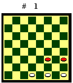
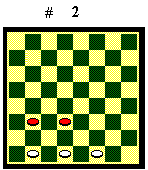
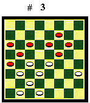
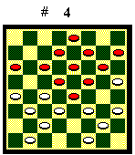

Elementi strategici
Cantone e Biscacco
Le due sponde della damiera non sono uguali: la parte del cantone (casa 32 per il Bianco e 1 per il Nero) è più facilmente difendibile, mentre la parte del biscacco (case 25-29 per il Bianco e 4-8 per il Nero) è più vulnerabile. Si considerino le seguenti posizioni esemplificative:

Diagramma 1. Il Nero, dalla parte del cantone, non ha modo di sfondare la base del Bianco.

Diagramma 2. Il Nero, dalla parte del biscacco, può forzare la damatura con il sacrificio 22-26.
Da qui, differenti principi strategici: in attacco, di solito, conviene dirigere l'azione dalla parte del biscacco avversario. In difesa, di solito, per non indebolire il biscacco, conviene avanzare pezzi dalla parte del cantone.
Per questo motivo, quando, per portare
pezzi "freschi" in gioco, si deve sdamare, generalmente è
consigliabile avanzare la pedina del cantone (32 per il Bianco e 1 per
il Nero).
Centro
Occupare il centro comporta un vantaggio di mobilità: si può raggiungere più velocemente ogni parte della damiera. In apertura e centro partita, comunque, una posizione centrale è forte solo se è saldamente ancorata alla base, altrimenti può essere soggetta a legature.

Diagramma 3. Il Bianco ha una posizione fortissima: occupa il centro con le pedine 18, 19 e 22 e la sua formazione è ben piantata sulla base per mezzo delle pedine 26, 29 e 30. Il Nero muove e perde.

Diagramma 4. Il Nero occupa
il centro, ma la sua posizione, collegata alla base dalla sola pedina 3,
è fragile. Il Bianco lo serra in una macro legatura. Il Nero muove:
15-20 (se 10-13, X, 24-20 il Nero sta peggio), 22x15, 12x19, 24x15, 11x27,
31x15, 14-19, 18-14 ecc. Il Bianco, in vantaggio di un pezzo, dama e vince.
Apertura e centro partita
L'apertura è la prima fase della partita, quando sono presenti quasi tutte le pedine e la posizione è più complessa. Dopo i primi cambi, si approda al centro partita. A dama, diversamente dagli scacchi, dove l'apertura serve a portare i pezzi in posizione efficace, visto che le pedine sono tutte uguali, il vivo del gioco inizia con la prima mossa e non c'è differenza strategica fra apertura e centro partita.
Riporto le parole di Sandro Maccagni che ben illustrano gli obiettivi: "I pezzi devono muoversi in formazione compatta, solidamente piantata alla base e con punte avanzate ben appoggiate." Naturalmente, si deve anche fare in modo che l'avversario non rispetti il precetto e abbia i pezzi disuniti e disancorati dalla base. "Sdamare è un fatto naturale nello svolgimento del gioco. Si sdama per difendere un pezzo, per puntellare la propria formazione, per non sbilanciarsi con altre mosse inopportune, per eseguire una mossa d'attesa, per adescare l'avversario."
Dopo aver ottenuto una buona pratica di gioco e aver ben assimilato le nozioni teoriche di base, per migliorare ulteriormente, è indispensabile approfondire la strategia delle aperture. A tale scopo si faccia riferimento al mio testo "Motivi di strategia delle aperture", reperibile gratuitamente in rete in formato WORD per Windows, ottimizzato per la stampa su foglio A4 e formattato per agevolare la lettura e lo studio.
Finale
Il finale inizia quando un colore ha damato oppure sono presenti poche pedine per giocatore, che non consentono di presidiare efficacemente ogni parte della damiera, e lo scopo immediato diventa la damatura.
L'obiettivo principe del finale è fare più dame dell'avversario, quindi, con dei cambi, sfociare in un finale teorico vantaggioso. Generalmente, con due dame in più, si vince anche a parità di pezzi.
Per giocare correttamente il finale è fondamentale padroneggiare i finali teorici. In appendice ne è data una ampia rassegna.
In rete è reperibile gratuitamente
anche il mio testo "Finali Teorici" in formato WORD per Windows,
ottimizzato per la stampa su foglio A4 e formattato per agevolare la lettura
e lo studio.
Indice